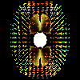
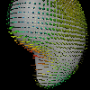
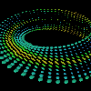
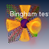

Second-order tensor field visualization examples.
 Analytical tensor field displayed by tensor glyphs
 Analytical tensor field displayed relative to a surface
 Analytical tensor field displayed relative to a cluster
 Sample gradient weighted images from an analytical tensor field.
The gradient images are combined to a new tensor volume using out-of-core processing. The volume rendering highlights areas in which the tensor is far from spherical.